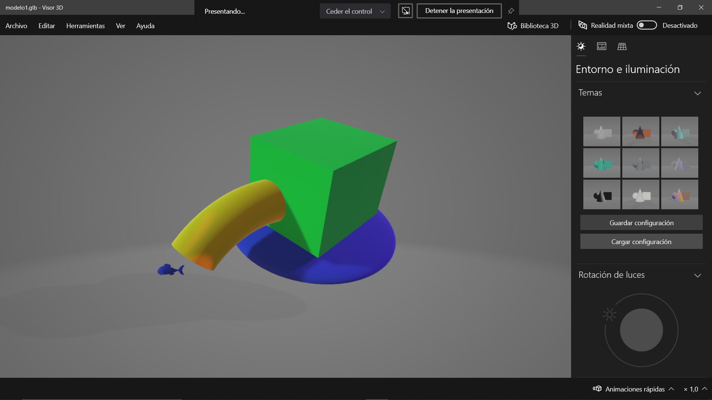

Diseño del producto.
¿Como realizamos esto?

Como informacion preeliminar necesitabamos saber a que riesgos estaria sometido el prodcuto final, para que en las juntas de diseño pudieramos tomar en cuenta el material de los componentes de la caja.Despues de rigurosos analisis de entornos , se creo un primer prototipo de la caja , que es poco convencional pero mantenia la esencia de lo que queriamos hacer.
Comenzamos a plantear el diseño de nuestro producto en un pre-renderizado, discutimos de manera rapida que forma tendra nuestra caja y la manera en la que recolectaria los desechos solidos sin afectar el medio ambiente, los resultados fueron positivos por lo que decidimos crear un render mas completo basandonos en medidas reales y optimizadas , para entornos hostiles en cuerpos de agua altamente contaminados.
Para la separacion de los desechos obtuvimos nuestra idea implementando un sistema de rejas con medidas escalonadas para los mas comunes tipos de desechos en rios y mares.
Pero comentamos que el diseño era ineficiente y se encontraba con errores de desarrollo tempranos, mecnionando que tendriamos problemas con los materiales de tipo metalicos.
Como siguiente renderizado , se planteo el filtro de microplasticos en la parte inferior del diseño junto con bandas magneticas para retener residuos metalicos y metales preciosos.Ademas de que plateamos las medidas finales que serian:
Largo: 7.6 mts
Ancho: 3.5 mts
Alto: 3.5 mts
Rejilla ancho: 3.2 mts
Rejilla largo: 3.2 mts
Largo de tira magnetica: 3.2 mts
Como resultado final , concretamos todos los detalles que veniamos tratando de mejorar o aplicar en modelos posteriores, para lograr la maxima eficiencia del dispositivo, haciendolo tambien agradable a la vista del usuario y amigable con el medio ambiente en donde se encuentra.
Toma posterior con tipografia